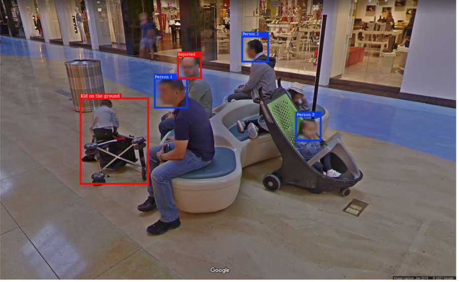
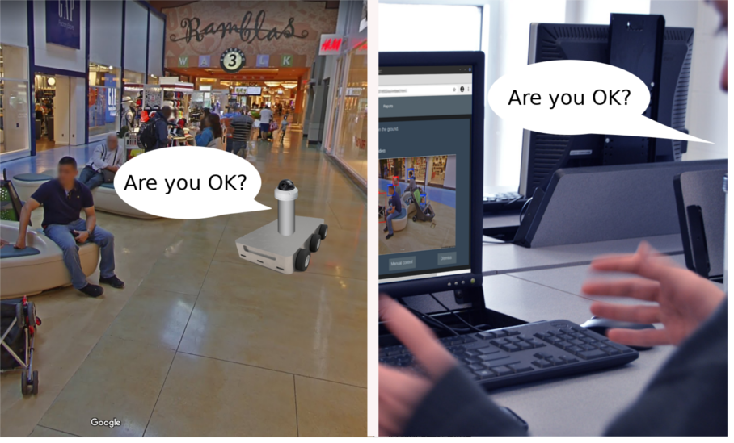

Motreebot product proposal Storyboard
In the following scenarios are depicted two applications of the Motreebot service, they can be simultaneously performed using the same robot platform.
Scenario 1
 |
1. The Motreebot Surveillance Service is being used in a mall. |
| 2. One of the robots is patrolling around the mall’s aisles. | |
|  | 3. The robot uses AI to identify the faces of people and other situations. The system can be trained to identify additional situations depending on the needs of the customer, this would be charged as additional fee. In this case, it identifies that one kid has fallen to the floor and also that one of the customers has been published by the police as suspicious subject. |
| 4. A notification is sent to the mall’s security and administrative office. The operator watches the live video of the robot. |  |
 |
5. The monitoring console permits to manage all the fleet of robots, check the reported events, send audio and remotely control the robots.
Go to Management Console mockup |
| 6. The security operator of the mall communicates with the fallen kid through the robot, using audio streaming to inquire if he is fine. Besides, he already sent a notification to the police to validate the face of the suspicious subject. |  |